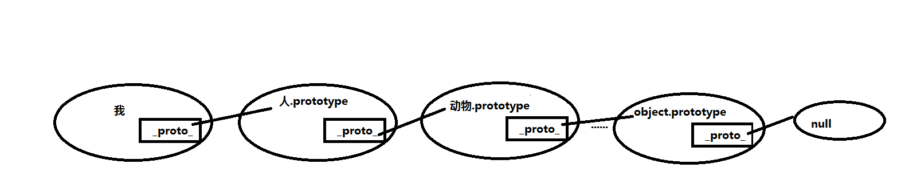

对象分为函数对象和普通对象
如何区分:
凡是通过 new Function() 创建的对象都是函数对象，其他的都是普通对象
对象分为函数对象和普通对象
如何区分:
凡是通过 new Function() 创建的对象都是函数对象，其他的都是普通对象
每个对象都会有特定的预定义属性，而prototype则是函数对象拥有的预定义属性，普通对象没有prototype,而是拥有另一个属性__proto__;
值得一提的事prototype它自己本身其实也是一个普通对象，他里面也包含着_proto_这个属性，这两个属性的主要作用都是用于继承
JS在创建对象的时候，__proto__属性指向创建它的函数对象的原型对象prototype，由__proto__串起来的直到Object.prototype.__proto__为null的链叫做原型链；如图所示：
具体实现方法:用子类的原型对象继承父类的实例，具体实现代码如下：
这是js中最简单的实现继承的一种方式，但仔细看上面代码，很容易发现他存在以下的问题：
1、子类无法向父类传参
2、原型对象的引用属性，所有实例共享，一旦修改，所有实例一起修改
具体实现方法：在子类上强行调用父类的实例属性，借用父类的构造函数来增强子类实例
这种方法简单粗暴的解决了原型链继承中存在的致命缺陷，但是这种方法每添加一个新实例就要添加一个function；极大的占用内存，没法实现函数的复用，容易造成内存爆炸。
具体方法：将原型链和借用构造函数技术组合在一块的一种继承方式
这种方法把上面两种方法的有点结合起来，缺点去除了，是现在最常用的js继承方式。